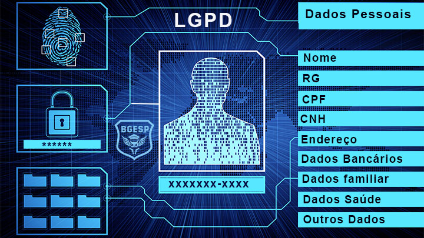

CONHEÇA O CURSO:

SOBRE O SITE...
.png)
.png)
.png)
O QUE O SITE APRESENTA?
As pessoas estão cada vez mais conectadas ao mundo digital, realizando todo tipo de interação e trocando dados e informações. Por isso a grande importância de saber como proteger seus dados e seus diretos.
A coleta e a utilização de dados são a moeda da economia digital, quando tratados em larga escala, geram tendências e perfis de consumo que movimentam a economia mundial. A coleta de dados é realizada por meio dos formulários e cadastros, físicos ou eletrônicos, que preenchemos com nossos dados pessoais para contratação de serviços.
O vazamento de dados, seja acidental ou ilícito, infringe os direitos do cidadão, prejudica a imagem da organização perante a sociedade e pode lhe trazer graves penalidades e prejuízos.
ATENÇÃO:
A privacidade, além de direito assegurado, é também pilar fundamental para o equilíbrio nas relações humanas, de forma que o indivíduo contribua na sua essência para a construção de um mundo melhor, de forma livre e conforme suas convicções.
As pessoas estão cada vez mais conectadas ao mundo digital, realizando todo tipo de interação e trocando dados e informações. Por isso a grande importância de saber como proteger seus dados e seus diretos.
A Lei Geral de Proteção de Dados Pessoais (LGPD) tem por objetivo proteger os dados pessoais, preservando a privacidade das pessoas, ao determinar às organizações diretrizes para o tratamento de dados pessoais dos indivíduos, evitando práticas abusivas e criminosas.

ATENÇÃO:
Caso a organização tenha que compartilhar seus dados com outras entidades públicas ou privadas, deverá informá-lo sobre este trâmite.
Reconhecer os direitos garantidos pela LGPD é um passo muito importante para a proteção da nossa privacidade. Ao entendermos os nossos direitos como cidadãos, deveremos estar atentos às nossas responsabilidades enquanto partes de uma organização, na proteção da privacidade das outras pessoas a quem, de alguma forma, atendemos na oferta de nossos produtos e/ou serviços.
É imprescindível que as organizações avaliem todo o processo de tratamento de dados pessoais e respeitem todos os princípios estabelecidos pela LGPD, é fundamental que as organizações ajam de forma preventiva, garantindo a segurança das informações, mapeando e tratando todos os riscos inerentes aos tratamentos a que fizerem uso.

ATENÇÃO:
Fique sempre atento às autorizações que são requeridas em sites e aplicativos.
NO FINAL...
Ao final do curso, esperamos que você tenha informações fundamentais sobre a LGPD, para identificar tanto os seus direitos, enquanto pessoa natural, quanto os deveres e as responsabilidades, que por ventura você possa ter em relação à preservação da privacidade dos dados pessoais dos indivíduos também na esfera corporativa.